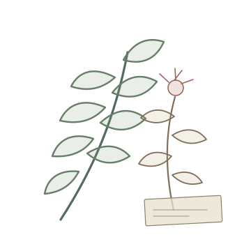
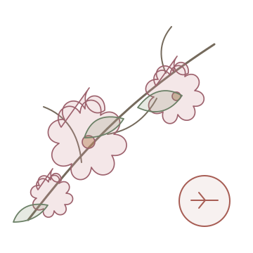
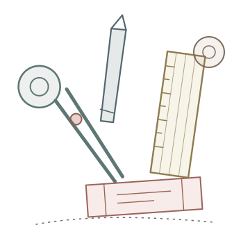
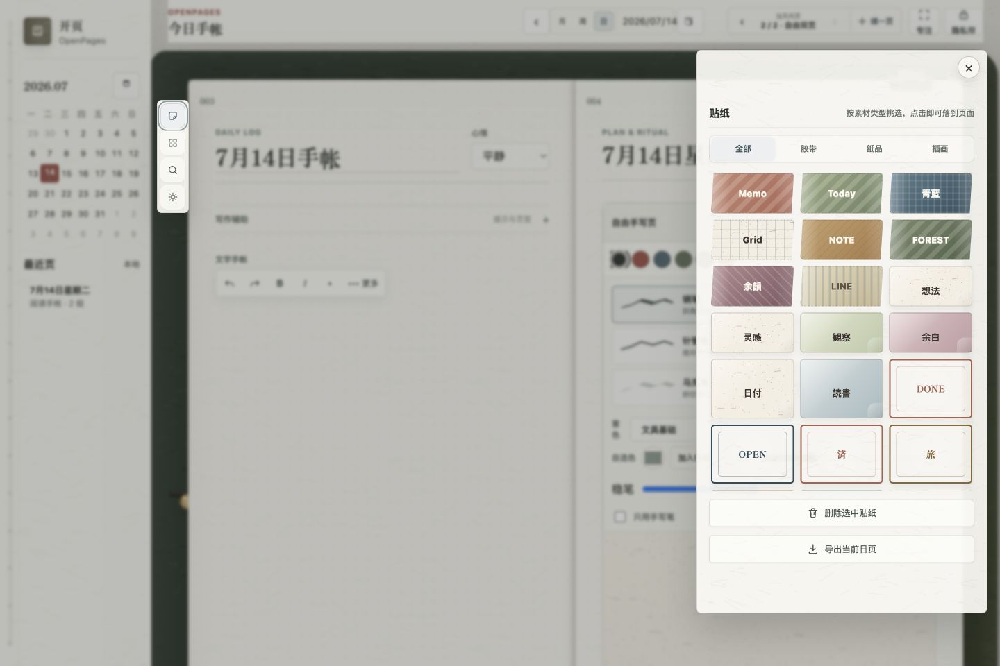

OP OPENPAGES · STUDIO 23
01 / 08
把手帐做成
一本真的能打开的 App
电脑排版，移动端手写。没有连续打卡压力，也不要求你填满每一页。
7种真实内页
6种差异笔刷
月 · 周 · 日计划联动
∞同日继续加页
OP 当前版本
02 / 08
从写下一页，
到把数据带走
不是列出入口，而是已经走通的三条使用路径。
01写
文字排版与双页书写6 种差异笔刷色板与纸张底纹贴纸、胶带与图片
02整理
7 种用途内页同一天无限续页月周日计划联动日期、标签与回看
03保存
本地优先，无强制账号JSON 完整备份Markdown 页面导出原生安装版健康授权
核心记录免费、离线可用；健康摘要只在原生安装版获得系统许可后读取。
02 WRITE · ORGANIZE · OWN
OP 跨设备书写
03 / 08
同一本手帐，
不同尺寸重新排版
桌面看完整双页；手机和平板把书写区域放在第一位。
电脑端长文输入、结构整理、模板与素材管理
平板端Apple Pencil / 触控笔手写与拼贴
手机端文字页和手写页单独切换，不挤成双栏
小屏不是桌面稿的缩小版，而是两张能独立书写的页面。
OP 内页系统
04 / 08
不是切功能，
是给今天换一张纸
每种内页都有自己的记录结构；写满后可以继续新增下一组。
01自由双页文字 / 手写
02速记索引任务 / 迁移
03阅读札记摘句 / 书目
04身心温度情绪 / 体感
05旅途采集路线 / 票根
06图文拼贴照片 / 旁白
07同日五年纵向回看
模板负责提供骨架，不替用户决定今天一定要记录什么。
OP 手写笔刷
05 / 08
笔刷应该改变笔迹，
不只是换一个名字
倾角、颗粒、透明度、速度、稳定度参与计算；色板和自选色可以继续扩充。
钢笔倾角收锋
圆珠笔细线墨珠
针管笔稳定等宽
铅笔石墨颗粒
马克笔斜切叠色
毛笔速度与留白
OP 日期与计划
06 / 08
月、周、日
是一条能走通的时间线
月历看方向，周页分节奏，日页承接生活；已有记录会回到日期索引。
MONTH月历主题、重点与内容标记
→
WEEK周计划安排节奏，不做连续打卡
→
DAY当天内页写满换模板继续下一组
OP 纸张与素材
07 / 08
插画不盖住内容，
只在页角留下气味
6 套原创线稿随当前页保存；底纹、墨色、贴纸与纸品可以独立搭配。

植物标本 BOTANICAL
四季花信 SEASONAL
文具工房 ATELIER

素材点击即可落到页面；后续可以通过开源素材包继续扩充。
OP 本地优先 · 开源 Beta
08 / 08
日记属于你，
不应该被账号和云绑住
内容默认留在当前设备；隐私数据只在你主动授权时读取。
02数据可带走JSON 完整备份与 Markdown 页面导出
OPEN BETA想参加内测，
评论区留「开页」网页体验核心记录；桌面与移动安装包按测试节奏开放。
OpenPages · 开页不是催你完成生活，而是替你留下生活。
开页